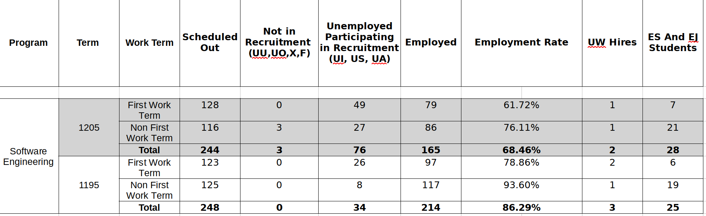

Hello SE Students,
A snapshot of employment statistics. The good news, such as it is, is that SE has the highest employment rate of the undergraduate programs in the Faculty of Engineering (I don't have Faculty of Mathematics data). So we're doing well, relatively speaking. The bad news, as you know, is that we're below the employment rate we would have in a regular year.
Here is a snapshot of CECA's employment statistics for us as of April 6th (which I just received today or yesterday). Term 1205 is spring 2020. Term 1195 is spring 2019. Here's how the UW term coding scheme works:
So 1201 is the winter 2020 term (starts in January), and 1205 is the spring 2020 term (starts in May). Fall of 2019 was term 1199 (starts in September, the 9th month).
There are a bunch of acronyms in the headings of this table that I don't know what they mean.
Here's the data:
According to this, our overall employment rate has dropped from 86% on April 6th 2019 to 68% on April 6th 2020. Maybe reality is just having a transposition error, getting the digits mixed up: does the 6 go in front of or after the 8? Wouldn't it be nice if we could just swap the digits in this chart and have reality adjust itself accordingly.
One thing that this snapshop doesn't show, is that in a normal year we would expect the employment rate to climb after April 6th (the date of the snapshot). This year I expect that the trend is the opposite and several of you have had jobs rescinded since April 6th.
TODO: Make sure that WaterlooWorks correctly reflects your status, so that these reports are as accurate as they can be.
Other tidbit of potential good news: I have heard a rumour that the university Provost has applied for some government funding for the university to hire co-op students for the summer. Hopefully the rumour is true. Hopefully the funding is approved. If it's true and approved we'll get properly told in the future and I'll let you know as soon as I do.
Be well, do good work, stay in touch,
-- Derek Rayside, PhD, PEng Director, Software Engineering University of Waterloo Calendar. DC-2539 or E7-5426.